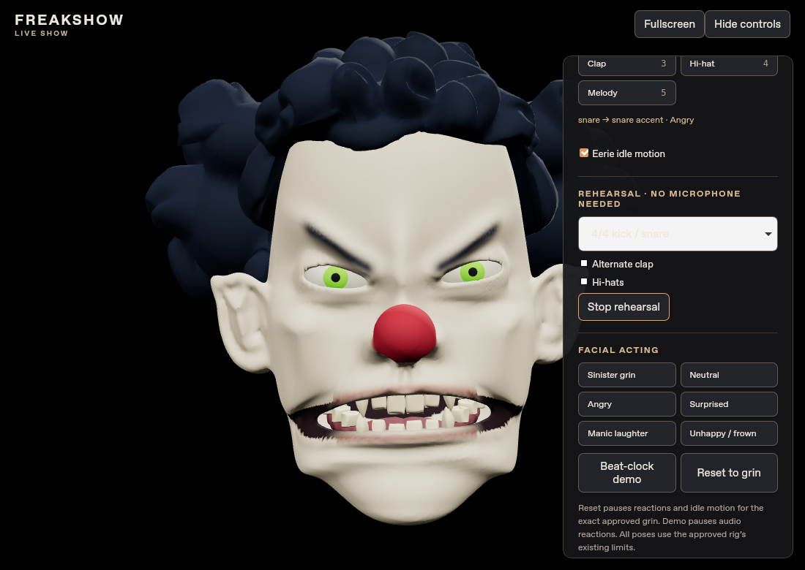
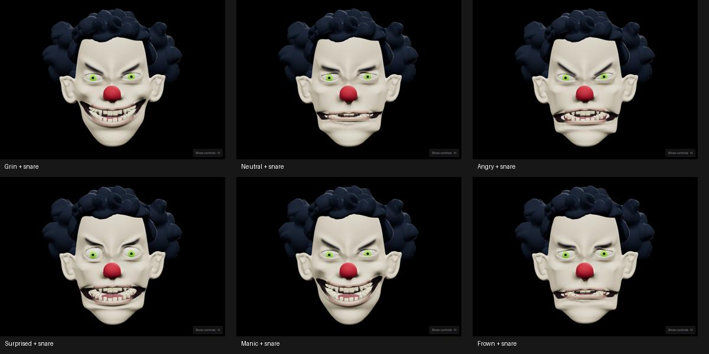

Open Live Show · Previous hit-triggered show + file playback (6998217) · Unchanged approved rig
The same six expressions and original Candidate A geometry are retained. Emotions now follow phrases rather than individual hits. Defaults: 135 BPM, eight beats per emotion, 1.5-beat transitions, medium accents, hats off and idle on.
Original grin → Angry → creepy frown → Manic laughter. Optional Neutral/Surprised and non-repeating random order are available under Sequence options. Manual expression buttons hold the selected emotion; percussion adds only small bounded accents. No audio or geometry reconstruction was introduced.
Use Beat-clock demo without microphone permission. Watch the 1–4 bar count and 1–8 phrase count. Choose previous hit-triggered behavior under Sequence options / compare to see the difference. Microphone and local MP3/WAV playback use the same accent and clock system.


Manual BPM, Tap BPM, beat-1 Resync, ×2/÷2 and ±20 ms phase nudges are provided. Auto Sync estimates periodic percussion with confidence/stability gating, bounded tempo changes and a continuous phase-rate correction. It never resyncs the phrase counter on an onset. Low-confidence input retains the last clock; ambiguous tracks may need tap/manual timing.